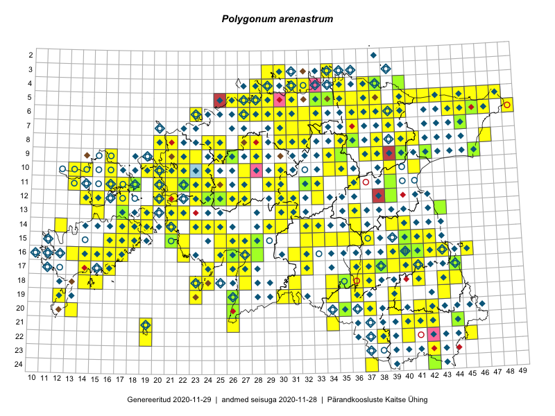

Polygonum arenastrum
Uuendatud: 2016-12-02
Kaardile koondatud taksonid: Polygonum arenastrum Boreau

Kaart põhineb 225 kirjel, neist vaatlusi 220 ja eksemplare 5. Taksonit on leitud 197 ruudust.
Kuvatud viited 20 esimesele andmebaasikirjele, ülejäänud PlutoFis
- Malle Leht: 2015-08-02: : ala
- Toomas Kukk, Eerik Leibak: 2015-08-10: 13-15: ala
- Rein Kalamees, Kersti Püssa: 2015-08-31: 04-32: ala
- Peedu Saar, Eerik Leibak: 2015-07-30: 16-41: ala
- Toomas Kukk, Eerik Leibak: 2015-08-11: 09-16: ala
- Toomas Kukk, Eerik Leibak: 2015-07-29: 16-45: ala
- Peedu Saar, Liina Oja: 2015-07-21: 06-44: ala
- Malle Leht: 2015-07-28: : ala
- Malle Leht: 2015-07-08: : ala
- Peedu Saar: 2015-08-04: 14-36: ala
- Peedu Saar, Ott Luuk: 2015-08-12: 23-42: ala
- Rein Kalamees, Kersti Püssa: 2015-08-15: 05-36: ala
- Tiit Hallikma, Toomas Kukk: 2015-08-24: 12-24: ala
- Rein Kalamees, Kersti Püssa: 2015-08-16: 05-34: ala
- Rein Kalamees, Kersti Püssa: 2015-08-15: 05-37: ala
- Rein Kalamees, Kersti Püssa: 2015-08-16: 05-35: ala
- Peedu Saar, Ott Luuk: 2015-09-02: 17-38: ala
- Meeli Mesipuu, Timo Luhamäe: 2015-07-21: 08-47: ala
- Indrek Tammekänd: 2015-09-18: 16-25: ala
- Indrek Tammekänd, Vilma Kuusk: 2015-08-30: 16-22: ala